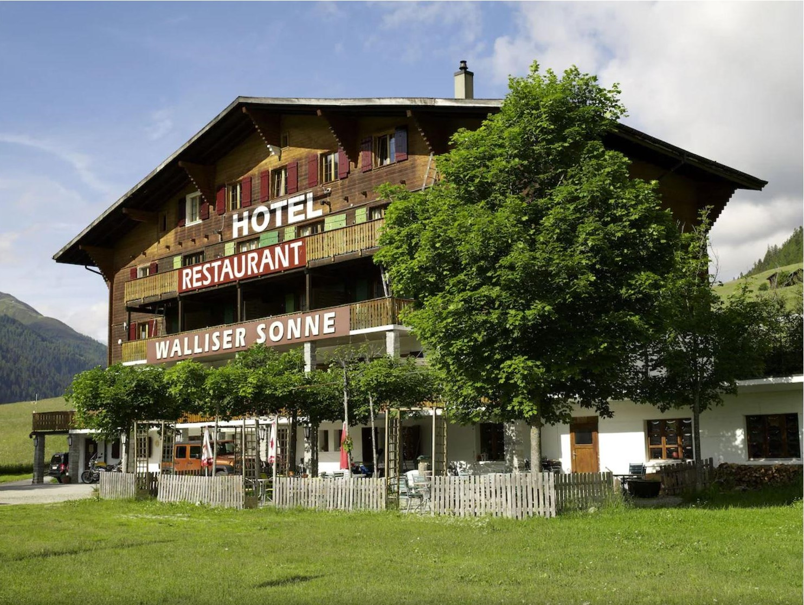
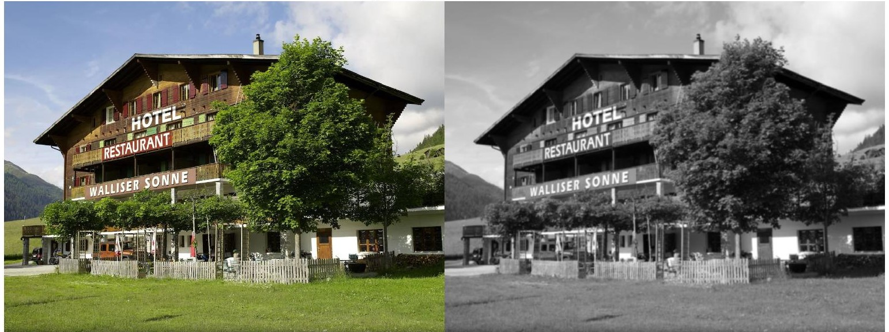

Sobel Edge Detection Algorithm
Image Filtering for Robot Localization and Mapping
Personal Project; December 2022
Background
Modern autonomous robots rely heavily on imaging in order to navigate their environments. Imaging technology comes in a variety of styles ranging from Lidar to standard cameras that operate within the visible spectrum. Cameras provide the robot with necessary information for path planning and localization. Yet, there is an inherent problem with imaging technology: it is too information-dense. What does this mean? A typical camera provides a surfeit of data every second. It is not possible for modern day computers to handle such a volume of information at a rate that is useful for real-time autonomous decision making. Thus, the data must be filtered. Processing and filtering image data allows the controller of the robot to parse necessary information in order to make decisions. The speed, accuracy, and efficiency of this filtering is key to the performance of an autonomous agent. For this project I have built a filter that takes an image input and returns the edges of the objects within it, commonly known as a Gaussian Filter with the Sobel Operator.
The Importance of Filtering and Edge Detection
Robotic systems equipped with cameras generate vast amounts of data. For example, a camera with a resolution of 1920×1080 operating at 30 frames per second produces approximately:
$$ \underbrace{1920 \times 1080}_{\text{Resolution (W$\times$H)}} \times \underbrace{3}_{\text{Color channels}}\times \underbrace{30}_{\text{Frame rate}} = 1.87 \times 10^8 \, \text{bytes/second.} $$
This data load is computationally prohibitive for real-time processing, especially when considering the small on-board computers typically used in autonomous platforms. Filters reduce data volume while retaining information critical to robot tasks like path planning and object detection. This project implements convolution-based filters, which efficiently process image data using numerical convolution in O(W × H) computational time.
Convolution-Based Filtering
Convolution is the mathematical foundation of image filtering. The continuous convolution operation is defined as:
$$ (f * g)(x) = \int_{-\infty}^\infty f(\tau)g(x - \tau) \, d\tau. $$
For images, we use a discrete form:
$$ (f * g)[x, y] = \sum_{i=-n}^n \sum_{j=-m}^m f[x - i, y - j]g[i, j] \textrm{, where } n \textrm{, }m \textrm{ is the size of }f[x,y], $$
where \( f(x,y) \) is the image and \( g(i,j) \) is the filter kernel.
Gaussian Denoising Filter

Let's walk through processing the above image. While it is certainly a lovely photo, there is all sorts of extraneous data that our robot doesn't need to process.
First, we will process it with a Gaussian filter, and secondly we will use a Sobel filter to extract the edges.
The Gaussian filter reduces noise by averaging pixel values based on a Gaussian distribution. Its kernel matrix can be represented as:
$$ g[x, y] = \begin{bmatrix} 1 & 1 & 1 \\ 1 & 2 & 1 \\ 1 & 1 & 1 \end{bmatrix}. $$
The weight (\( \sigma \)) determines the influence of neighboring pixels. After applying this filter, the image is significantly smoothed, making subsequent edge detection more effective.
The diagram above shows a sample image (left) and a denoised image (right). To reduce data size, the color values at each place were replaced with a brightness value, making the image black-and-white. The right image should look slightly blurred compared to the original, which is the desired effect of the denoising.
The Sobel Operator
Next, we will convolve this image with the Sobel Filter, in order to reduce the image to its edges and pertinent information. The Sobel filter consists of two basis kernels \(s_x \) and \(s_y \), each of which are convolved with our image, \(f(x,y)\) and then summed in order to generate the filtered image. The kernels essentially take a directional gradient along the \(x \) and \(y \) axes at each point of the matrix, and thus each kernel operates in only one direction. To retrieve the final construction, the magnitude of the gradient at each pixel must be taken. The kernels take the form:
$$ s_x = \begin{bmatrix} 1 & 0 & -1 \\ 2 & 0 & -2 \\ 1 & 0 & -1 \end{bmatrix}, \quad s_y = \begin{bmatrix} 1 & 2 & 1 \\ 0 & 0 & 0 \\ -1 & -2 & -1 \end{bmatrix}. $$
Now, we can convolve our image, \( f(x,y)\), with the kernels and compute the magnitude of the directional components of the gradient to illustrate the edge density:
$$ G_x = \begin{bmatrix} 1 & 0 & -1 \\ 2 & 0 & -2 \\ 1 & 0 & -1 \end{bmatrix} \ast f[x,y], \quad G_y = \begin{bmatrix} 1 & 2 & 1 \\ 0 & 0 & 0 \\ -1 & -2 & -1 \end{bmatrix} \ast f[x,y]. $$
Lastly, with the uni-directional gradient values calculated, the magnitude can be calculated:
$$ G[a,b] = \sqrt{G_x[a,b]^2 + G_y[a,b]^2} \quad \forall \left | a \right |,\left | b \right | \leq m,n. $$
The result is an edge-detected image, retaining essential features for robot path planning while discarding redundant data.
Note that there is still a considerable amount of noise in this image. The simplest method to do away with this unwanted data is to
delete any pixel value beneath a certain threshold, leaving the desired edges extracted from the image:

Importance of the Gaussian Filter
It is important to note the importance of the Gaussian filter in this process. Without it, the filtered image would lack much of the necessary noise reduction.
Below is an image convolved with the Sobel filters without prior denoising. Note the large amount of leftover noise that passed the threshold test:
Analysis and Conclusion
The processed image is an order of magnitude smaller than the original, reducing the computational expense of localization and decision-making. Without preprocessing, robots cannot handle the raw data load effectively, resulting in delayed or inaccurate actions. In a short set of steps, we have managed to perform a series of calculations that actually make localization a feasible real-time task. The figure below compares the frequency and intensity of pixel values ranging from 0 to 255 on both the original image and edge-detected image:
The table below shows the difference in size between the original and processed images:
| Stage | Size (Bytes) | Reduction from Original |
|---|---|---|
| Original RGB Image | 6,220,800 (6.22 Mb) | 0% |
| Grayscale Image | 2,073,600 (2.07 Mb) | ~67% |
| Edge Map | 259,200 (259 Kb) | ~96% |
The processed image is a handful of kilobytes, compared to the megabytes of the original image. Its pixel-matrix representation is full of zeros, which makes computational operations necessary in localization far less expensive than they otherwise would be. Though these data filtering and image processing techniques are not at the current forefront of the field, they still do a good job in representing how powerful and necessary image processing is. Without quick access to good sensor information, a robot cannot make good decisions in real time, and a robot that cannot make good decisions is not a very good robot in the first place.